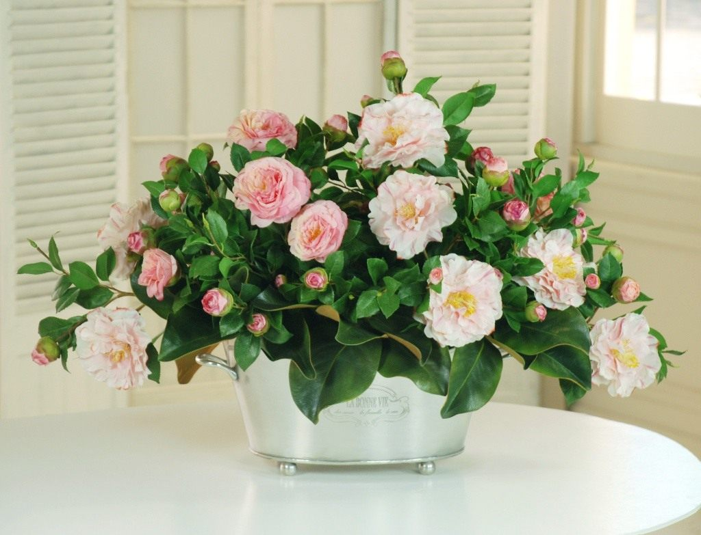

Ваш гид по поливу и уходу за растениями!
Популярные
Потос
- Быстрорастущее вьющееся растение с сердцевидными листьями. Может расти в различных условиях и требует умеренного полива. Отлично подходит для начинающих.
Читать далее
Фиалка
- Невысокое цветущее растение с яркими листьями. Требует яркого, но рассеянного света и регулярного полива. Легко размножается черенками. Могут цвести круглый год.
Читать далее
Алоэ вера
- Суккулентное растение, известное своими целебными свойствами. Любит солнечный свет и требует редкого полива. Отлично подходит для дома и офиса.
Читать далее
Орхидея
- Элегантное цветущее растение, требующее немного больше внимания. Предпочитает яркий, но рассеянный свет и высокую влажность. Уход требует знания особенностей вида.
Читать далее
Хлорофитум
-Красивое растение. Легкое в уходе растение с длинными извитими листьями и воздушными корешками. Хорошо очищает воздух и приспособляется к различным условиям.
Читать далее
Солнечные
Суккуленты
- Эти растения хорошо приспособлены к засушливым условиям и нуждаются в ярком солнечном свете. Самые популярные виды: алоэ, эхеверия, юкка.
Читать далее
Гербера
- Красивое цветущее растение, которому нужно много света для обильного цветения. Хорошо подойдут для букетов. Предпочитает яркий, но рассеянный свет.
Читать далее

Лаванда
- Жизнестойкое растение. Включает в себя более 47 видов. Помогает создать приятный аромат в доме и может использоваться в кулинарии.
Читать далее
Агавы
- Эти растения также любят солнечные места и могут расти в довольно жарких условиях. Они становятся очень декоративными при правильном уходе.
Читать далее

Кактусы
- Кактусы обожают яркий солнечный свет и требуют редкого полива. Их разнообразие позволяет выбрать подходящий по размеру и форме.
Читать далее
Теневые

Аглаонема
— это растение имеет красивые листья, которые могут быть разных цветов, и оно популярно за свою выносливость в условиях низкой освещенности.
Читать далее

Каладий
— Декоративное лиственное растение с яркими листьями, которое также предпочитает полутень. Включает в себя более 15000 видов в Бразилии.
Читать далее
Бегония
— Некоторые виды бегоний прекрасно себя чувствуют в условиях недостаточного света и радуют глаз красивыми листьями и цветами. Более 1600 видов.
Читать далее

Камелия
—Вечнозеленое растение семейства Чайные - это растение предпочитает полутень и обладает красивыми цветами, которые украсят ваше помещение.
Читать далее
Филодендрон
— Неприхотливое растение с декоративными листьями, которое также не требует много света и может расти в тени. Имеется более 900 видов.
Читать далее
Для кухни
Базилик
- Ароматное растение, часто используемое в кулинарии. Требует яркого солнечного света и регулярного полива.
Читать далее
Петрушка
- Популярное пряное растение, которое легко выращивать в домашних условиях. Предпочитает яркое, освещение.
Читать далее
Мелисса
- Растение с лимонным ароматом, отлично подходит для чая и кулинарии. Требует солнечного света и регулярного полива.
Читать далее
Череда
- Лекарственное растение для настоев и чаев. Предпочитает солнечные места и хорошо растет в саду или на балконе.
Читать далее
Кинза
- Ароматное растение, используемое в кулинарии. Легко растить в горшках на подоконнике или балконе.
Читать далее
Для спальни

Сансевиерия
- Неприхотливое растение, которое очищает воздух и хорошо растет в тени. Требует редкого полива.
Читать далее

Спатифиллум
- Элегантное растение с белыми цветами, предпочитает умеренную тень на балконе и требует умеренного полива.
Читать далее
Узумбарская фиалка
- Небольшое цветущее растение, требующее рассеянного света и регулярного полива. Украсит любую спальню.
Читать далее
Папоротник
- Появился 400 млн лет назад. Любит влагу и тень. Удобно размещать на подоконниках или в углах спальни.
Читать далее

Герань
- Приятный аромат и красивые цветы, требует солнечного света и умеренного полива. Более 400 видов.
Читать далее